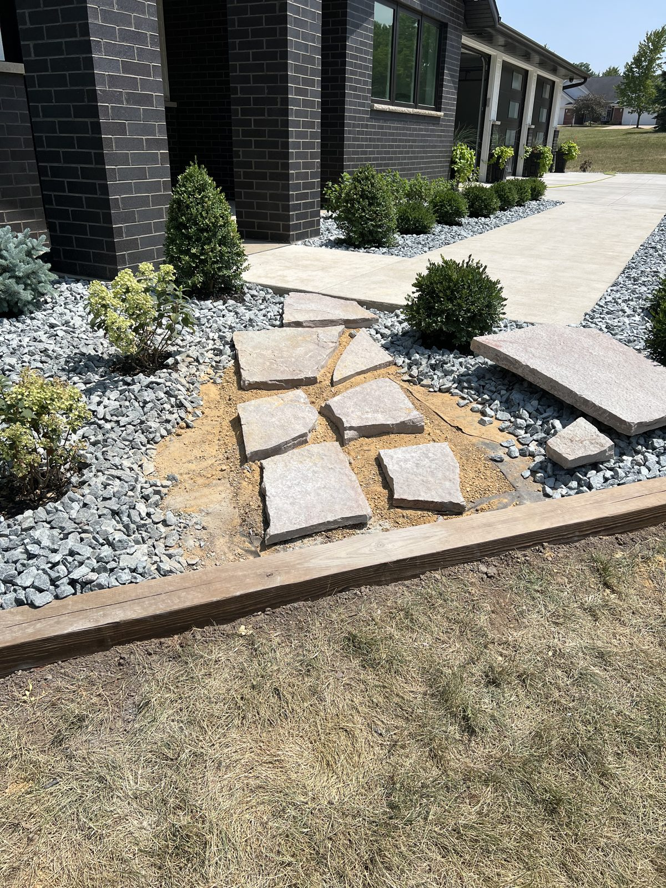

September 19, 2026 · New View Landscaping
Most hardscape damage in our area doesn't come from heavy use. It comes from water. Water gets into joints and under pavers, freezes, expands and shifts things a little. Then it thaws and does it all over again. A few hours of work in the fall takes a lot of that stress out of the equation.
Start by checking the joints between pavers. Over a summer of rain, weeding and sweeping, joint sand washes out, and empty joints let water down into the base and let pavers move. Sweeping fresh polymeric or fine joint sand into the gaps before the ground freezes keeps everything locked together and also slows weeds from taking hold.
Next, look at where water goes. A patio or walkway should shed water away from the house, and nothing should be pooling on it or running toward the foundation. Downspouts that dump onto a patio, a low corner that holds a puddle or soil that has settled against the edge are all worth fixing before freezing weather. Standing water on hardscape in winter is how pavers heave and concrete cracks.
Sealing is a judgment call. A good sealer can help protect against stains and salt, and some people like the color it brings out, but it's not required for a paver patio to last, and a bad application can leave a cloudy or slippery surface. If you do seal, it needs a dry stretch of days and clean, dry pavers, so fall is the last good window.
De-icers are worth thinking about now too. Rock salt can be rough on both concrete and pavers, especially newer concrete that hasn't fully cured through a few winters. Sand gives traction without the chemical damage, and products labeled safe for pavers or concrete are a better choice than the cheapest bag at the store.
The last thing is snow removal itself. A metal-edged shovel or a plow blade set too low will chip paver edges and scrape up joints. A plastic shovel and a little patience protect the surface, and marking the edges of walkways with stakes helps whoever is plowing know where your hardscape begins.
Paver patios, walkways and fire pits, laid on a base built to stay flat.
Learn MoreIowa winters are hard on patios. Here's the real difference between pavers and poured concrete once freeze-thaw cycles are in the picture.
A retaining wall is only as good as what's underneath it. Here's what actually makes a wall hold for twenty years instead of five.
Standing water after every rain almost always traces back to grading, not sod. Here's how to tell the difference and what actually fixes it.